Proyek & Pengalaman
Pengabdian Masyarakat
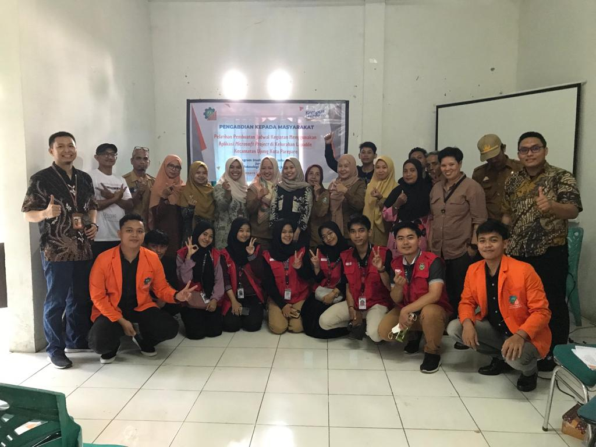
PelatihanPelatihan Microsoft Project
Kantor Kelurahan Lapadde, Kota Parepare
Pelatihan penggunaan Microsoft Project untuk staf kelurahan.
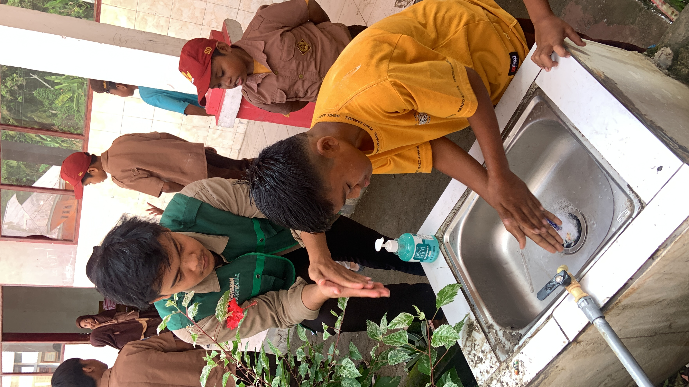
BeasiswaProgram Khusus Penerima Beasiswa Kalla
Desa Suruang, Polewali Mandar
Pengabdian kepada masyarakat melalui program beasiswa Kalla.
Penelitian & Pengembangan
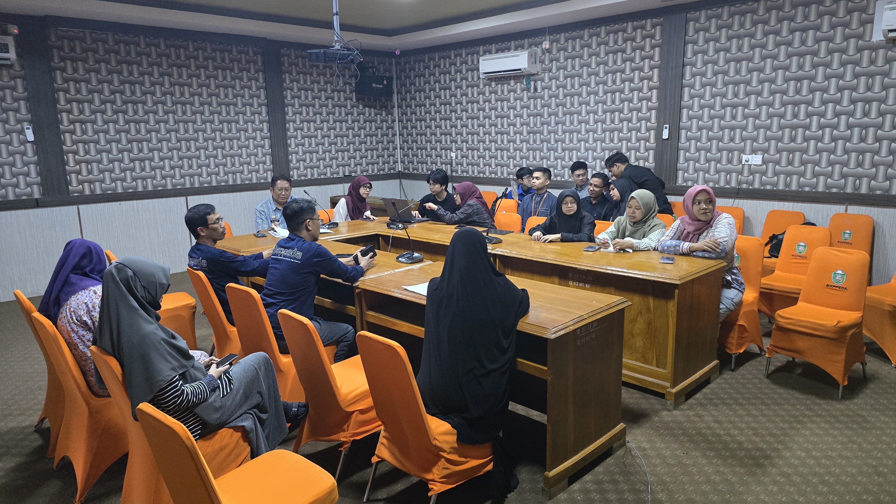
System Analyst & Front EndAplikasi Monitoring Keuangan Kota Parepare
Bappeda Parepare
Pengembangan aplikasi monitoring keuangan untuk Bappeda Parepare.
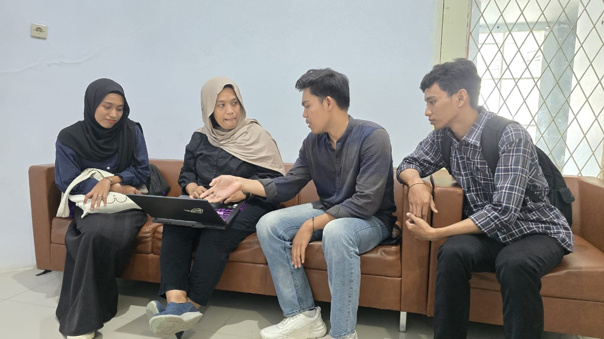
Web DevPerancangan Website PPKPT "Lapor Aman"
Proyek Penelitian & Pengembangan
Website pelaporan kekerasan seksual dengan keamanan data.
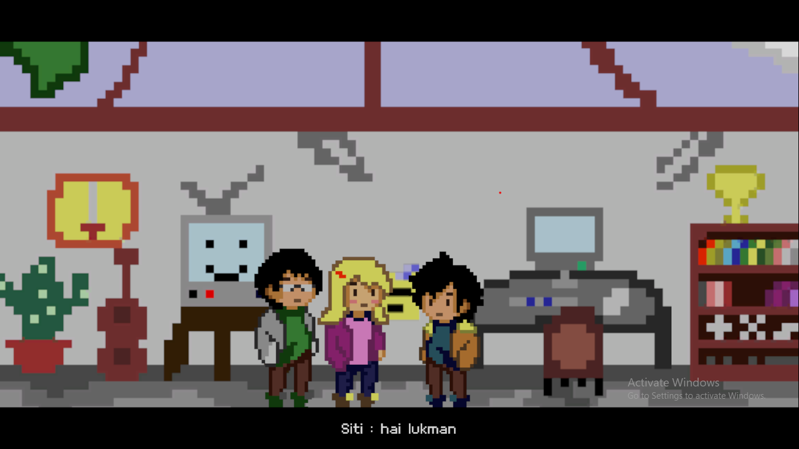
Game EdukasiPerancangan Game Edukasi Keamanan Jaringan
Proyek Edukasi & Teknologi
Perancangan game edukasi interaktif untuk meningkatkan pemahaman keamanan jaringan bagi pelajar dan mahasiswa.
Pelatihan & Sertifikasi
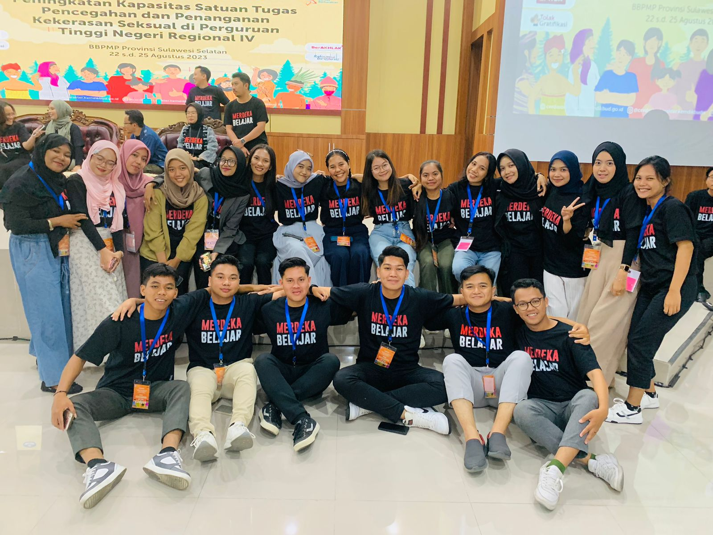
PPKSPelatihan Peningkatan Kapasitas PPKS
Kemendikbudristek, Wilayah IV (Timur)
Pelatihan pencegahan & penanganan kekerasan seksual di kampus, diikuti universitas dari Kalimantan, Sulawesi, NTT, dan Papua.
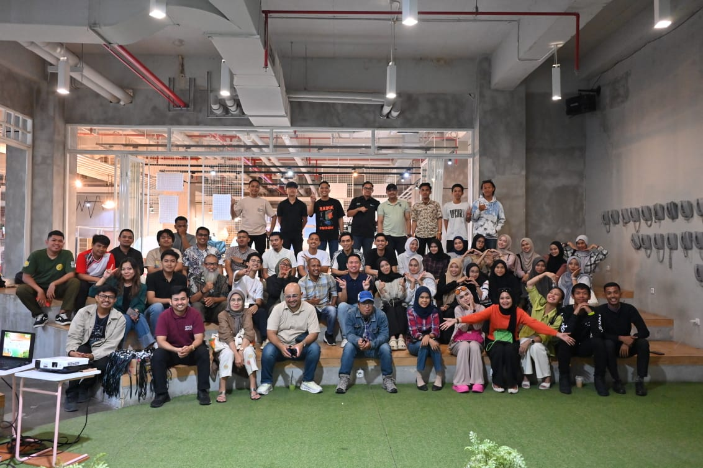
KepemimpinanPelatihan Kepemimpinan Kalla
2022-2024
Peserta pelatihan kepemimpinan yang diselenggarakan oleh Kalla, fokus pada pengembangan soft skill dan kepemimpinan pemuda.
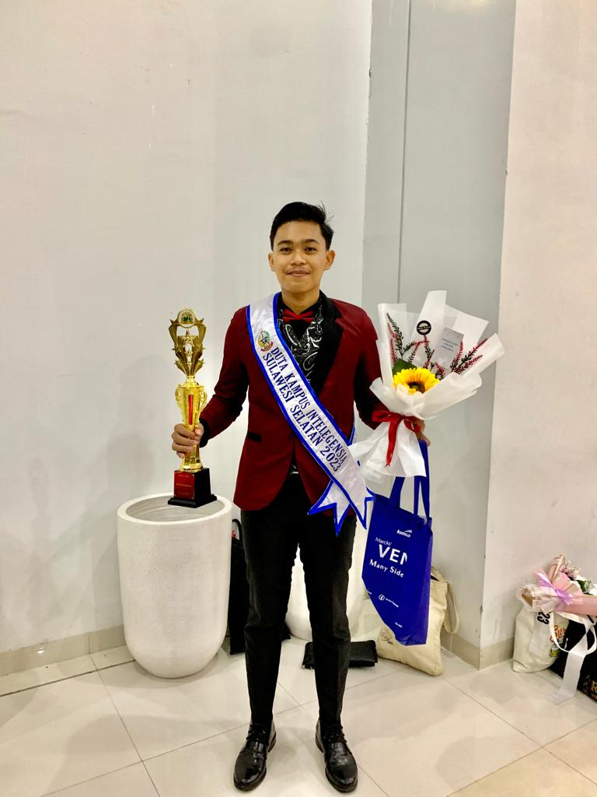
DutaDuta Kampus Intelegensia Sulawesi Selatan
2023-2024
Menjabat sebagai Duta Kampus Intelegensia Sulawesi Selatan, berperan aktif dalam promosi pendidikan dan pengembangan intelektual mahasiswa.
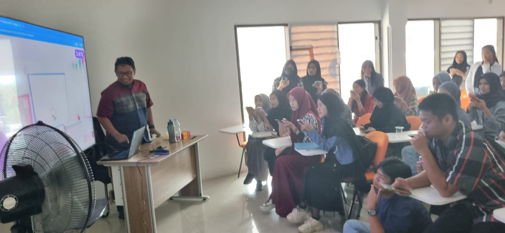
KewirausahaanPelatihan Kewirausahaan Kominfo
2024
Peserta pelatihan kewirausahaan yang diadakan oleh Kominfo, memperdalam pengetahuan dan keterampilan bisnis digital.
Pengalaman Lain
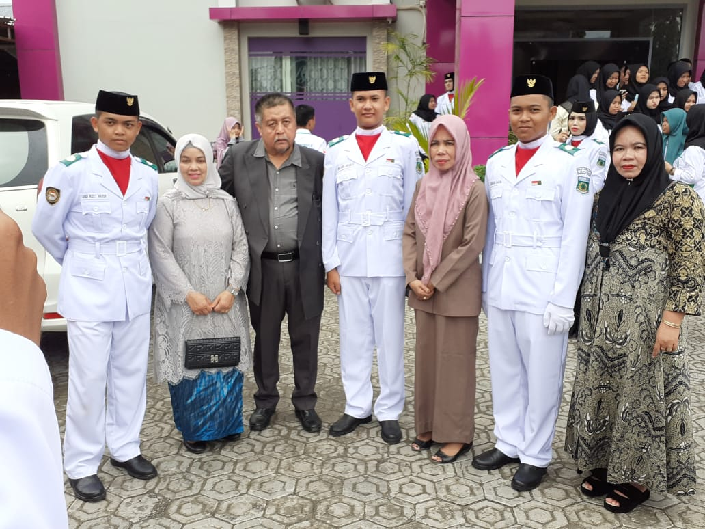
Anggota Paskibraka
Tingkat Kabupaten
Menjadi anggota Paskibraka tingkat kabupaten.
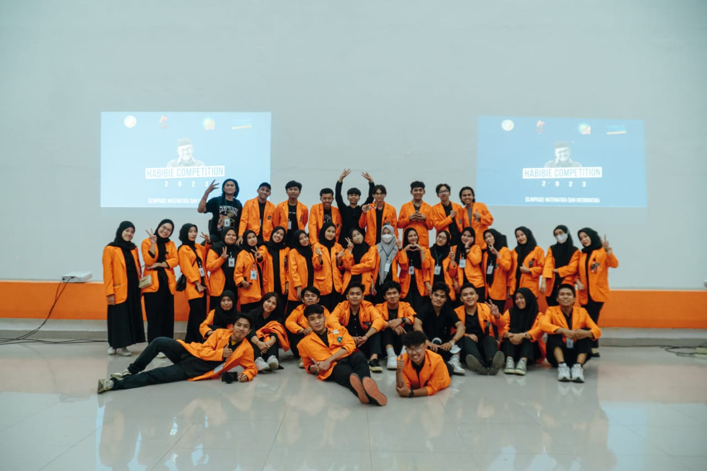
Badan Eksekutif Mahasiswa
2022-2023
Koordinator Penalaran, aktif dalam pengembangan intelektual dan kegiatan organisasi mahasiswa.
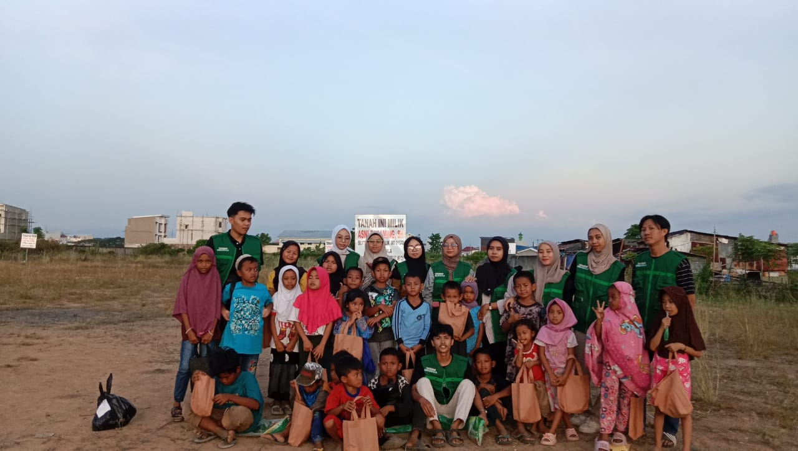
Komunitas Kalla Youth Changemaker
2022-Sekarang
Kalla Youth Change maker atau disingkat KYC. saya merupakah Anggota aktif dalam komunitas penggerak perubahan dan pengembangan kepemudaan.
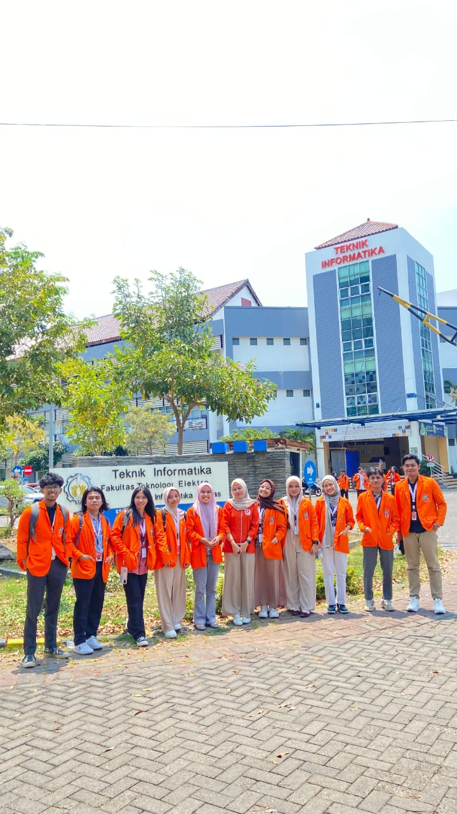
SBPPKM di ITS & Universitas Brawijaya
2024
Peserta SBPPKM (Studi Banding Peningkatan dan Pengembangan Kreatifitas Mahasiswa) di ITS dan Universitas Brawijaya, memperluas wawasan dan jejaring nasional.
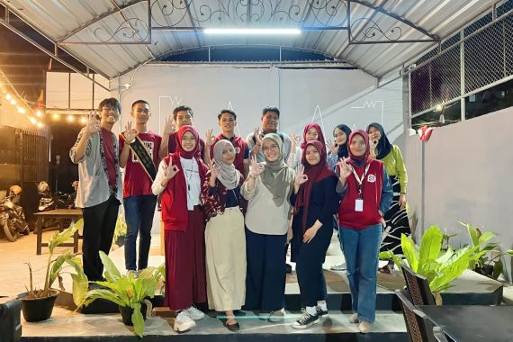
Acara Sandination Makassar
2023
Peserta Acara Sandination di Makassar, 2023. Mengikuti seminar dan workshop seputar inovasi, teknologi, dan pengembangan diri.

Master of Ceremony
Berbagai Acara
Menjadi MC di berbagai event formal dan informal.